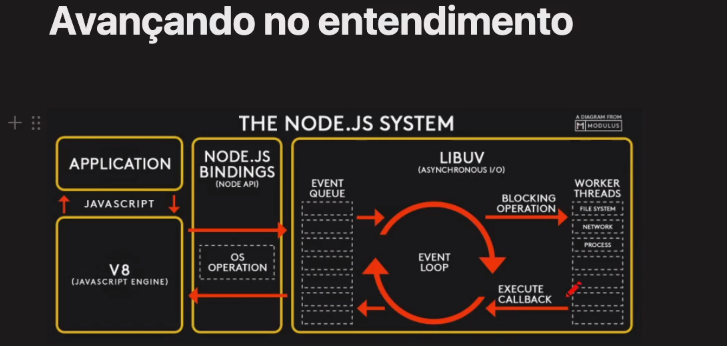

O que podemos fazer com NodeJS
- Backend
- Front End
- Micro serviços
-
API
- WebApp
- Mobile
- Desktop
- Scripts e Automaçãp
- Machine learning
- I. A.
Para que não devemos usar NodejS
Coisas q precisem de muito processamento ou seja CPU não é recomendado usar Node
exemplo: processamento de videos e fotos
Vantagens
Ele é muito rápido na execulção e para prototipar uma aplicação
alta escalabilidade
Aplicações de ponta
JS everywhere
Ecosistema gigante
Casos de uso:
- Netflix
- Paypal
- https://www.simform.com/nodejs-use-case/
O que é o NodeJS
É um Javascrip Runtime Enviroment (ambiente de execulção em javascript)
Como se fosse um mini sistema operacional. Um ambiente completamente dele para rodar javascript
Ele fica separado do sistema operacinal mas consegue conversar com o mesmo e o sistema operacional conversa com o hardware
Não é um framework
Não é uma linguagem de programação
Por ser modular, mesmo a linguagem do ambiente sendo em JS, algumas coisas q funcionam no node não vão funcionar no navagador(browser)
Google v8 javascript engine
Compõe o ambiente, a máquina virtual, que irá rodar o JS na máquina
Interpretador de JS para linguagem de máquina
Criado em C++
Está bem próximo da linguagem de máquina (seu código no node > V8 > C++ > linguagem de máquina )
Baseado nas últimas features do JS
Focado para Chrome, mas tem todo o cuidado de não quebrar o Node
Não possui a DOM, console ou File System
Como funciona?
Node é sigle-threaded, non-blocking e asynchrounous
Imagine uma batalha entre dois restaurantes
Restaurante do Tio Apache (diferencial: cada cliente tem seu próprio garçon)
Um cliente vai fazer o pedido de uma pizza
- Um garçon é direcionado até sua mesa
- Pega o pedido e leva até a cozinha, para o Chef preparar
- O Chef, por regra do restaurante, irá proibir o garçon de voltar para o cliente até que sei pedido fique pronto
- O cliente não pode pedir um suco enquanto espera a pizza pq o garçon está bloqueado
- Após o pedido ficar pronto, o garçon leva de volta para o cliente
Ao o cliente ir embora, por regra do restaurante, o garçon é despedido
Resumo: A regra de bloquear os garçons e ter que contratar um garçon para cada cliente, torna o serviço caro e lento
Restaurante Noderson (diferencial: O garçon de nome Eveneto Lupin)
Mesa 1: O cliente vai fazer o pedido de uma pizza
- Eveneto Lupin pega o pedido e leva para o Chef
- Volta para pegar o próximo pedido
Mesa 2: O cliente faz o pedido de uma salada
- Eveneto Lupin já pegou o pedido e levou para o Chef
- Volta para pegar o próximo pedido
O Chef tocou um sininho avisando que o pedido da mesa 1 já ficou pronto
- Eveneto Lupin busca e entrega o pedido da mesa 1
- Volta para pegar o próximo pedido
Resumo: Eveneto Lupin trabalha de maneira assíncrona, fazendo mais de 1 evento de cada vez e não tem nada que o bloqueie.
Decifrando
- Tio Apache
- Apache
- Noderson
- Node
- Cliente
- Usuário
- Pedido
- Request
- Garçon
- Thread
- Cozinha
- Servidor
- Chef
- Banco de dados
- Eveneto Lupin
- Event Loop
Avançando no Entendimento
Qualquer pedido feito entra na fila "Event Queue"
Quando alguma coisa vai para "Blocking Operation(setTimeout, await)" ele só volta para a fila "Event Queue" depois q ela estiver vazia